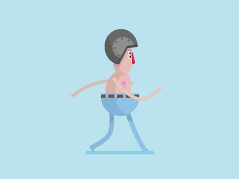

A05：Walking Gif
以提供的 walk.gif 製作成品 a5.gif：角色由畫面左邊界外走入，向右移動，最後走出右邊界。
成品 a5.gif（480 × 360，3 秒循環）
原始素材 walk.gif（原地踏步）

製作步驟
- 讀取 walk.gif 的 25 張分解圖，取得背景色
rgb(185, 226, 237)。
- 比對每張分解圖與背景色的差異，算出角色的共同邊界（x 132～336、y 58～311）並裁切出角色。
- 建立 480 × 360 的背景畫布，依照時間比例把角色貼在
x = -角色寬 → 畫布寬 之間，
使其自左邊界外進場、由右邊界外離場。
- 走路動作依序循環套用 25 張分解圖，共輸出 75 格、每格 40 毫秒（合計 3 秒）並設定無限循環。